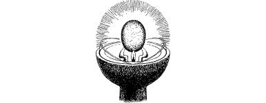

112
The fabled Moonstone was created many thousands of years ago by the god-like Shianti, whose presence upon Magnamund heralded the dawn of humanity. This wondrous artefact contains the combined might of all their magic and wisdom, the sum of all their knowledge. So significant was the creation of this artefact that all time on Magnamund is measured from the date of its creation. It had long been held that the Moonstone’s location was a secret known only to the remnants of the Shianti, who dwell upon the Isle of Lorn in deepest Southern Magnamund, yet the evidence of your eyes tells you that this mystical stone of power has fallen into the hands of the Dark God.
{kind=link}

Suddenly the significance of the Moonstone becomes clear. Naar is using its legendary powers to generate Shadow Gates within the world of Magnamund, at locations and times of his own choosing. Such power has enabled him to send his loathsome champions to your home world, while the goodly forces of Kai and Ishir are held at bay, helpless to counter them. Only you and your Kai brethren have stood in the way of the onslaught of Naar’s agents since the demise of his Darklords.
The hideous form of the Dark God returns to the dais and settles there uneasily. Then a deep rumble fills the throne hall; it is the prelude to the voice of Naar.
‘You have done well, my champion,’ it booms. ‘Now I command you to return to accursed Sommerlund and finish my work. Prepare the way for my armies of night. At last this planet is mine for the taking. My victory is complete!’
It is clear from his words that Naar is convinced that you are his champion—Wolf’s Bane—freshly returned from a duel in which Evil has triumphed. Suddenly you see Alyss emerge from the smoky wall less than a dozen paces behind Naar, yet the Dark God appears unaware of her presence. She appears calm and focused, and you sense that she is waiting for an auspicious moment to approach the plinth and take the Moonstone. With bated breath you watch as she inches closer and closer to the legendary stone. Then Naar shifts his gruesome bulk and she freezes.
‘You will not return to Sommerlund alone, Wolf’s Bane. Kekataag the Avenger will accompany you. He has a mission of assassination to complete in Toran, at the Brotherhood of the Crystal Star.’
Then the Dark God emits a high-pitched whistle and, moments later, a fearsome warrior answers the call. He emerges from the smoky wall and the floor shudders as he strides to the centre of the throne hall.
If you possess Kai-screen, turn to 183.
If you do not possess this Grand Master Discipline, turn to 34.